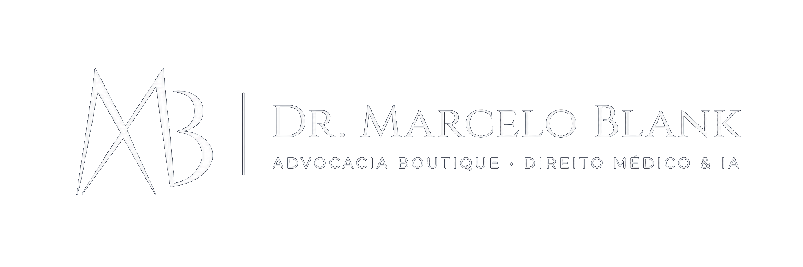

01
Planos de saúde
Revisão de reajustes, negativas de cobertura, cancelamento, reembolso e home care.
Entenda a atuação em planosPlanos de saúde, medicamentos de alto custo, erro médico e SUS. Orientação jurídica para pacientes e famílias.
Converse sobre seu caso
Atuação jurídica para pacientes e famílias,
com análise individualizada de cada caso.
Revisão de reajustes, negativas de cobertura, cancelamento, reembolso e home care.
Entenda a atuação em planosAcesso a medicamentos de alto custo, tratamentos oncológicos e terapias para TEA.
Saiba mais sobre medicamentosAnálise de possíveis falhas no atendimento médico ou hospitalar e de pedidos de reparação por danos materiais e morais.
Entenda a análise do casoQuestões sobre fornecimento de medicamentos, exames, cirurgias e continuidade do cuidado.
Saiba mais sobre demandas do SUSPara quem tem uma ideia ou está desenvolvendo um aplicativo: orientação sobre regulação, LGPD, contratos e responsabilidades.
Conheça a assessoria jurídicaPara quem já tem um aplicativo desenvolvido ou em operação: revisão jurídica de documentos, processos e pontos de adequação.
Conheça a auditoria jurídicaAtuação em Direito da Saúde, Saúde Digital, Consumidor e Cível, além de LGPD, Inteligência Artificial e assessoria para startups e healthtechs.
Participação na Comissão de Direito Digital e Proteção de Dados da OAB Santos/SP.
Publicação em Direito Sanitário · FiocruzInforme o assunto e se existe urgência.
Entenda quais documentos reunir para a análise.
Conheça as alternativas e as condições de atuação.
Fale com o escritório para iniciar o atendimento.